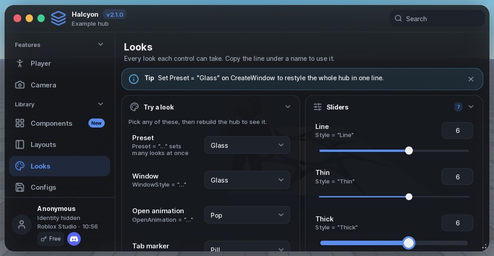
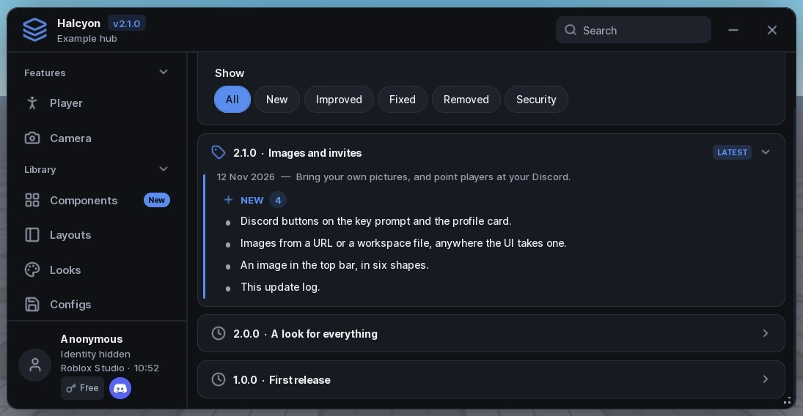
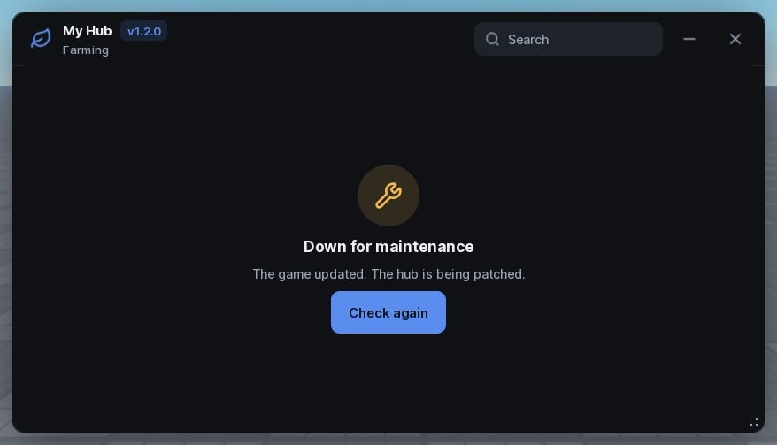

Halcyon docs
Everything you need to build a hub, in reading order. Each part links to the full reference on GitHub when there's more to say.
Getting started
Load the library, make a window, add a tab, a section and some controls. Call LoadAutoload last so a saved config can restore everything you built.
local Halcyon = loadstring(game:HttpGet("https://raw.githubusercontent.com/ScriptsForDays/Halcyon/main/dist/Halcyon.luau"))()
local Window = Halcyon:CreateWindow({ Title = "My Hub", Icon = "gamepad-2", Folder = "MyHub" })
if not Window then return end -- only needed with a KeySystem
local Player = Window:Tab({ Title = "Player", Icon = "user" })
local Movement = Player:Section({ Title = "Movement", Icon = "footprints" })
Movement:Toggle({ Title = "Fly", Flag = "Fly", Callback = function(on) end })
Movement:Slider({ Title = "Walk speed", Min = 16, Max = 120, Default = 32, Flag = "WalkSpeed" })
Window:SettingsTab()
Window.OnUnload:Connect(function() -- undo what the hub changed end)
Window:LoadAutoload()In Roblox Studio, insert dist/Halcyon.rbxmx into ReplicatedStorage and require it from a LocalScript instead.
Running the same hub twice replaces the first window, as long as Folder stays the same. You don't need your own "already running" check.
Window
Every option is optional. These are the ones most hubs touch:
| Option | What it does |
|---|---|
Title, Subtitle, Icon | Shown in the top bar. Version adds a tag beside the title. |
Folder | Where configs and settings save, and the hub's identity across runs. |
TabStyle | Sidebar, Rail, Top or Dock navigation. Narrow windows use Top. |
Size, Scale | Starting size (always fitted to the screen) and interface scale. |
ToggleKey | The key that shows and hides the window. RightShift by default. |
TopbarImage | A picture before the title, in six shapes with TopbarImageStyle. |
CommandPalette | true lets Ctrl+K search every tab and setting. |
Profile, KeySystem, UpdateLog | Covered in their own parts below. |
The window also has Notify, Dialog, SetEnabled (grey every control), AddTopbarButton and Unload. The full list is in the API reference.
Tabs and sections
A tab is a page; a section is a titled box of rows on it. Wide windows show two columns, and Side = "Right" puts a section in the second. On a phone everything stacks in the order you wrote it.
local Combat = Window:Tab({ Title = "Combat", Icon = "swords", Group = "Features" })
local Aim = Combat:Section({ Title = "Aim", Tabs = { "Players", "NPCs" } })
Aim:Tab("NPCs"):Toggle({ Title = "Target bosses first" })
local Farm = Combat:Section({ Title = "Auto farm", Switch = { Default = false, Flag = "Farm" }, Side = "Right" })- Tabs inside a section (
Tabs) keep parallel settings together. - A header switch (
Switch) greys every row in the section while it's off. ShowWhenon any row or section shows it only while another control has a value, so tuning options appear only when they apply.- Locks:
TierorPaidOnlyon a tab, section or row keeps it visible but locked, with your own wording.
Controls
Every control takes one table of options and returns a handle with Get, Set and Changed. Set always runs the Callback; creating a control doesn't, except a Toggle that starts on.
| Control | Use it for |
|---|---|
Toggle | A feature that stays on or off. Can carry its own keybind and colour. |
Button, Buttons | Something that happens now. Hold-to-confirm, press-twice and loading states. |
Slider | A number in a known range, with a typed value box, prefix, percent or range. |
Segmented, Radio | One of a few options, all visible. |
Dropdown | One or several of many: icons, headings, searchable, or the server's players. |
Checklist, Chips, Tiles | Several picks of one kind, as rows, pills or icon cards. |
Input | Free text or an unbounded number. Password, multi-line, counter, clear. |
Keybind, ColorPicker, DatePicker | A key, a colour or a date the player chooses. |
Stepper, Rating | Small exact counts and levels. |
Progress, Status, Countdown | State the hub reports: progress, a status pill, time left. |
Table | Sortable rows and columns of data. |
Paragraph, Label, Accordion | Text, callouts and fold-out help. |
Divider, Space, Code, Image | Structure and media. |
Every control also takes Description, Icon, Flag, Tooltip, Badge, Info and Requires (lock the row when the executor lacks a function). Options for each control are in the API reference.
Looks and presets
Nothing changes until you opt in. Then you choose how far to go:
-- One control
Section:Toggle({ Title = "Fly", Style = "Slim" })
-- Every control of a kind in this window
Halcyon:CreateWindow({ Title = "Hub", Styles = { Toggle = "Slim", Slider = "Thick" } })
-- A coordinated set: Classic, Minimal, Glass, Neon or Compact
Halcyon:CreateWindow({ Title = "Hub", Preset = "Glass" })
An element's own Style wins over the window's Styles, which win over a preset. The example hub's Looks tab shows every look with the line that turns it on. The complete list is in styles.md.
Themes and personalising
Sixteen themes ship with the library, each keeping text at a contrast of 4.5 or more on every surface. Colours are roles, so switching themes recolours everything already on screen.
Halcyon:SetTheme("Aurora")
Halcyon:AddTheme({ Name = "Mine", Base = "Midnight", accent = Color3.fromRGB(80, 220, 160) })
Window:SettingsTab({ Personalise = true, ThemeBuilder = true })Personalise lets players change font, text size, corners, spacing, window transparency and notice position, live and saved. ThemeBuilder lets them make a theme and share it as text.
Images
Anywhere Halcyon takes an image or icon, it accepts an icon name, an asset id, an https URL or a file in the executor's workspace. URLs download once to Halcyon/assets and show through getcustomasset.
Halcyon:CreateWindow({
Title = "My Hub",
TopbarImage = "https://example.com/logo.png",
TopbarImageStyle = "Squircle", -- Circle, Rounded, Square, Squircle, Ring, Badge
})Images over 5 MB are refused, and files must stay inside the workspace. Where getcustomasset isn't available, such as Roblox Studio, an image icon shows instead.
Key system
Tiers run from lowest to highest. Keyless needs no key, Free is a key earned through your ad link, and Paid unlocks everything. Use your own names if they fit better.
KeySystem = {
Title = "My Hub access",
Discord = "https://discord.gg/example",
Tiers = {
{ NoKey = true },
{ Name = "Free", AdService = { Name = "Linkvertise", Link = "https://…", Confirm = function(key) return askYourServer(key) end } },
{ Name = "Paid", Validate = function(key) return askYourServer(key) end },
},
}A key prompt in a client script is a gate for honest players, not security. Check keys on your own server and keep anything valuable there.
More in key-system.md.
Profile and Discord
The profile card shows the player's avatar, name, tier, executor and clock, with an anonymous mode. Profile = false hides it.
Profile = { ShowClock = true, Discord = "https://discord.gg/example" }The Discord button on the profile is separate from the one on the key prompt; set either, both or neither. A press opens the invite in the Discord app when it's running; otherwise it copies the link. Either way the player is told which.
Notices and dialogs
Window:Notify({ Title = "Config saved", Kind = "success", Style = "Compact" })
local job = Window:Notify({ Title = "Downloading", Style = "Progress" })
job.SetProgress(0.5)
job.Done("Downloaded")
Window:Dialog({
Title = "Delete this config?",
Buttons = { { Title = "Keep" }, { Title = "Delete", Variant = "Danger", Delay = 3 } },
})Notices come in ten styles. Send them for results players can't see (saved, failed, finished), not for every toggle; the switch moving is feedback enough.
Update log
UpdateLog = true adds a tab of releases, newest first, with changes grouped by kind, search, filters and a badge until the player has seen the newest.
UpdateLog = {
Popup = true, -- show the newest once as a what's-new card
Updates = {
{ Version = "1.2.0", Date = "12 Nov 2026", Title = "Auto farm", Entries = {
{ Kind = "New", Text = "Auto farm for the mines" },
{ Kind = "Fixed", Text = "Teleports after respawn" },
} },
},
}
Window:AddUpdate({ Version = "1.2.1", Entries = { { Kind = "Fixed", Text = "Crash on join" } } })
Kinds are New, Improved, Fixed, Removed and Security. Versions sort by number, so 1.10 comes after 1.9. UpdateLog = false builds nothing.
Panels
Window:Loading()covers the window during setup and moves only as you callSetProgress.Window:Changelog()shows a what's-new card once per version.Tab:EmptyState()fills a tab whose content isn't ready, or failed to load.Window:Lock()andUnlock()block the hub for maintenance or a required update.Tab:About()lists credits and links the player can copy.

Configs and saving
A config holds the value of every control with a Flag. The Settings tab includes a config section, or place one anywhere with Window:ConfigSection(tab).
Loading a config runs each flagged Callback, so give Flags to settings worth restoring, not to toggles that start something risky. The player's interface choices save on their own to Halcyon/<Folder>/settings.json.
For AI assistants
If you build hubs with an AI assistant, give it two files:
- LLM.txt lists every component in the same shape: what it's for, when not to use it, its options, its looks and common mistakes.
- llm-guide.md explains how to pick controls, how much to put on a tab and what to leave out, with the reasons.
https://raw.githubusercontent.com/ScriptsForDays/Halcyon/main/LLM.txtChangelog
2.1.0
- Images from a URL or workspace file anywhere the UI takes one, through
getcustomasset. TopbarImagein six shapes.- Discord buttons for the key prompt and the profile card.
UpdateLog, a tab of releases with search, filters and an unseen badge.
2.0.0
- Named looks for every control, and five presets.
- Twelve new controls, including Radio, Tiles, Table and DatePicker.
- Window looks, open animations, tab markers and tabs inside sections.
- Tooltips, spotlights, five more notice styles and Ctrl+K search.
- Six more themes, live personalising and a theme builder.
- Loading, what's-new, empty-state and lock panels.
1.0.0
First release. The full history is in CHANGELOG.md.